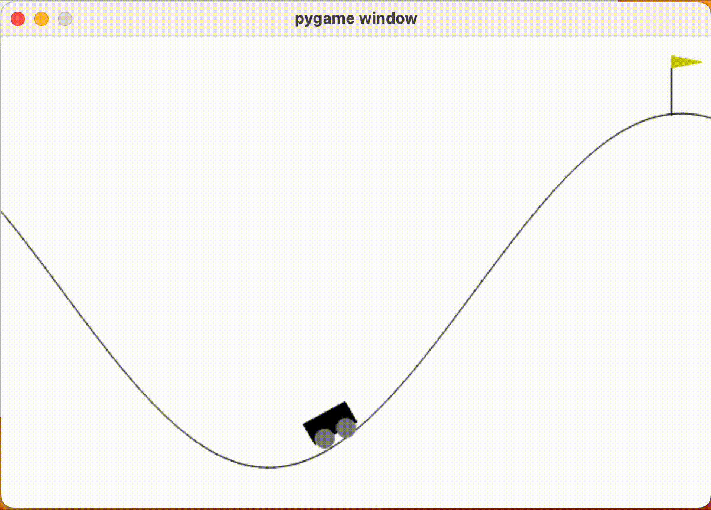

Gym_tutorial_1
안녕하세요, 이번 포스트부터는 Carla Simulator에서도 강화학습이 가능하다는 이야기를 듣고 모델 구성을 위해 개념을 잡아보는 시간으로 이번 포스팅을 하게 되었습니다.
강화학습 개념을 잡기 위해 OpenAI의 gym을 이용하여 개념을 잡아보고자 합니다.
0. 설치
pip install gym
위 명령어를 실행하여 gym을 설치해줍니다.
1. 환경 설정
import gym
gym을 불러옵니다.
사용하고자 하는 강화학습 환경은 CartPole, CarRacing, LunarLander 등의 다양한 환경을 사용할 수 있습니다.
env = gym.make("MountainCar-v0")과 같이 사용하고자 하는 환경을 초기화해줍니다.
env에 속한 사용 가능한 action의 갯수는 print(env.action_space.n)으로 확인할 수 있습니다.
env = gym.make("MountainCar-v0")
print(env.action_space.n)
위의 코드로 되어있는 파이썬 파일을 실행하면 3이라는 결과를 확인하실 수 있습니다.
이는 진행방향 왼쪽으로 이동 (0), 유지 (1), 오른쪽으로 이동 (2)을 의미합니다.
강화학습을 진행할 때마다 env는 new_state, reward, 해당 환경의 완료 상태 (done) 등을 반환합니다.
모델은 0, 1, 2에 대한 정보와 reward에 대해서만 정보를 알게되고, 학습을 수행합니다.
reset() 메소드를 이용하여 환경을 초기화합니다.
env.reset()의 값을 출력하면 초기 위치가 반환됩니다.
(array([-0.53320926, 0, ], dtype=float32), {})
아래 코드는 MountainCar-v0 모델을 사용하여 왼쪽으로만 이동하는 경우입니다.
done은 모델이 이번 iteration 목표치에 도달하지 못했으므로, 다음 iteration으로 진행할지 말지에 대한 여부 판단을 하는 역할을 하는 변수입니다.
현재는 완료되지 않은 상태로 설정했습니다.
다음 iteration으로 진행할 때 왼쪽으로만 이동하도록 했습니다.
while not done:
action = 2
env.step(action)
env.render()
주의사항으로는 gym 버전이 업데이트 됨에 따라 가시화를 위해 gym.make("Model NAME", render_mode="human 또는 rgb_array 등")의 옵션을 추가해주어야 합니다.
import gym
env = gym.make("MountainCar-v0", render_mode="human")
env.reset()
done = False
while not done:
action = 2
env.step(action)
env.render()
위 코드의 결과는 아래 그림과 같습니다.

3. step 함수
위에서 reward 없이 한 방향으로만 움직이는 것을 확인했습니다.
step 함수를 추가하여 업데이트 된 카트의 위치, 보상, 목표치 도달 여부를 확인하도록 하겠습니다.
new_state, reward, done, info, _ = env.step(action)
각 스텝마다 new_state, reward를 얻습니다.
new state : [-0.34594882 0.00170417]
reward : -1.0
done : False
new state : [-0.34451485 0.00143398]
reward : -1.0
done : False
new state : [-0.3433603 0.00115454]
reward : -1.0
done : False
new state : [-0.34249264 0.00086766]
reward : -1.0
done : False
현재 카트의 새로운 위치 및 보상 등이 업데이트 됨을 확인할 수 있습니다.